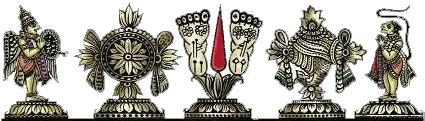
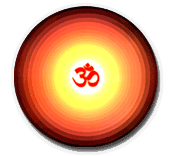
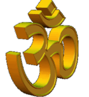
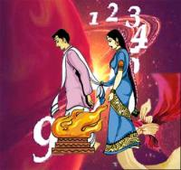

| अंक ज्योतिष | |
|---|---|
अंक ज्योतिष (Numerology)संसार में ज्योतिष की कई शाखाऎं (Branches Of Astrology) हैं, जिनमें से अंक ज्योतिष भी एक है. सामान्यतय ज्योतिष में ग्रहो का प्रभाव कार्य करता है. प्रत्येक ग्रह किसी न किसी नम्बर से जुडा हुआ है या हुम इस प्रकार भी कह सकते हैं कि कोइ एक नम्बर किसी ग्रह विशेष का प्रतिनिधित्व करता हैजैसे कि 1 नम्बर सूर्य (1 Number of Sun), 2 नम्बर चन्द्र (2 Number of Moon) तथा 9 नम्बर मंगल (9 Number Of Mars) या इत्यादि. नम्बर 1 से 9 तक ही लिए जाते हैं. 0 को इसमें सम्मिलित नही किया गया है. ग्रह भी 9 ही होते हैं, अतः प्रत्येक ग्रह का एक विशेष अंक है. पाश्चात्य अंक ज्योतिष (Numerology) सात ग्रहो के अलावा नैपच्यून व यूरेनस को क्रमशः आठवाँ व नौवा ग्रह मानता है. जबकि भारतीय अंक ज्योतिष राहु-केतु को आठवें एंव नवें ग्रह के रुप में लेता है. भारतीय एंव पाश्चात्य अंक ज्योतिष के फलादेश (Jyotish Phaladesh) कथन में थोडा सा अन्तर रहता है. व्यक्ति का एक और अंक होता है जिसे सौभाग्य अंक (Destiny Number/ Lucky Number) कहते हैं. यह नम्बर परिवर्तनशील है. व्यक्ति के नाम के अक्षरो के कुल योग से बनने वाले अंक को सौभाग्य अंक कहा जाता है, जैसे कि मान लो किसी व्यक्ति का नाम RAMAN है, तो उसका सौभाग्य अंक R=2, A=1, M=4, A=1, एंव N=5 = 2+1+4+1+5 =13 =1+3 =4 होगा. यदि किसी व्यक्ति का सौभाग्य अंक उसके अनुकूल नही है तो उसके नाम के अंको में घटा जोड करके सौभाग्य अंक (Saubhagya Anka) को परिवर्तित कर सकते हैं, जिससे कि वह उस व्यक्ति के अनुकूल हो सके. सौभाग्य अंक का सीधा सम्बन्ध मूलांक से होता है. |
|
 |
अंक ज्योतिष से विवाह (Marriage and Numerology)अंकशास्त्र में मुख्य रूप से नामांक (Name Number), मूलांक (Root Number) और भाग्यांक (Destiny Number) इन तीन विशेष अंकों को आधार मानकर फलादेश किया जाता है. विवाह के संदर्भ में भी इन्हीं तीन प्रकार के अंकों के बीच सम्बन्ध को देखा जाता है.अंक ज्योतिष (Numerology) भविष्य जानने की एक विधा है. अंक ज्योतिष से ज्योतिष की अन्य विधाओं की तरह भविष्य और सभी प्रकार के ज्योंतिषीय प्रश्नों का उत्तर ज्ञात किया जा सकता है. विवाह जैसे महत्वपूर्ण विषय में भी अंक ज्योतिष और उसके उपाय काफी मददगार साबित होते हैं. अंक ज्योंतिष अपने नाम के अनुसार अंक पर आधारित है. अंक शास्त्र के अनुसार सृष्टि के सभी गोचर और अगोचर तत्वों अपना एक निश्चत अंक होता है. अंकों के बीच जब ताल मेल नहीं होता है तब वे अशुभ या विपरीत परिणाम देते हैं. अंकशास्त्र में मुख्य रूप से नामांक, मूलांक और भाग्यांक इन तीन विशेष अंकों को आधार मानकर फलादेश किया जाता है. विवाह के संदर्भ में भी इन्हीं तीन प्रकार के अंकों के बीच सम्बन्ध को देखा जाता है. अगर वर और वधू के अंक आपस में मेल खाते हैं तो विवाह हो सकता है. अगर अंक मेल नहीं खाते हैं तो इसका उपाय करना होता है ताकि अंकों के मध्य मधुर सम्बन्ध स्थापित हो सके. वैदिक ज्योतिष (Vedic Astrology) एवं उसके समानांतर चलने वाली ज्योतिष विधाओं में वर वधु के वैवाहिक जीवन का आंकलन करने के लिए जिस प्रकार से कुण्डली से गुण मिलाया जाता ठीक उसी प्रकार अंकशास्त्र में अंकों को मिलाकर (Numerology Marriage compatibility) वर वधू के वैवाहिक जीवन का आंकलन किया जाता है. |